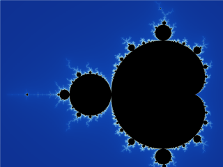
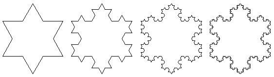

29 Janvier 2026
Les fractales sont le sujet que j’avais choisi pour mon Grand Oral de terminale. On les retrouvent partout dans la nature : flocons de neige, côtes rocheuses, arbres, vaisseaux sanguins.
“Bottomless wonders spring from simple rules, which are repeated without end.” - Benoît Mandelbrot, 1982
Une fractale c’est une structure géométrique qui présente la propriété d’auto-similarité : elle se répète à l’identique (ou presque) a toutes les échelles d’observation.
C’est la fractale la plus célèbre. Elle est définie dans le plan complexe par la suite :
\[z_{n+1} = z_n^2 + c\]
avec \(z_0 = 0\) et \(c \in \mathbb{C}\).
Un point \(c\) appartient à l’ensemble de Mandelbrot si et seulement si la suite \((z_n)\) reste bornée :
\[\exists M > 0, \quad \forall n \in \mathbb{N}, \quad |z_n| \leq M\]
Si \(|z_n| > 2\) pour un certain \(n\), la suite diverge et \(c\) n’appartient pas à l’ensemble.

Il est obtenu en retirant récursivement le triangle central de chaque triangle :
| Itération | Nombre de triangles |
|---|---|
| 0 | 1 |
| 1 | 3 |
| 2 | 9 |
| \(n\) | \(3^n\) |
il est Construit à partir d’un triangle équilatéral en remplaçant à chaque itération le tiers central de chaque segment par un triangle équilatéral.
Étapes de construction :

Le code suivant calcule le périmètre du flocon de Koch après un nombre d’itérations donné.
#include <stdio.h>
int main() {
int nb_segments = 3;
double longueur = 1.0;
printf("Iteration | Perimetre\n");
printf("----------|----------\n");
for (int n = 0; n <= 6; n++) {
double perimetre = nb_segments * longueur;
printf(" %d | %.6f\n", n, perimetre);
nb_segments = nb_segments * 4;
longueur = longueur / 3.0;
}
return 0;
}nb_segments = 3
longueur = 1.0
print("Iteration | Perimetre")
print("----------|----------")
for n in range(7):
perimetre = nb_segments * longueur
print(f" {n} | {perimetre:.6f}")
# a chaque iteration : 4x plus de segments, chacun 3x plus court
nb_segments = nb_segments * 4
longueur = longueur / 3Sortie des deux programmes :
| Itération | Périmètre |
|---|---|
| 0 | 3.000000 |
| 1 | 4.000000 |
| 2 | 5.333333 |
| 3 | 7.111111 |
| 4 | 9.481481 |
| 5 | 12.641975 |
| 6 | 16.855967 |
Le périmètre tend vers l’infini à mesure que les itérations augmentent, alors que l’aire reste finie.